Talisay · Taal Lake
A landscape within a landscape: an island volcano rising from the middle of Taal Lake. View it from the lakeshore towns and ridge roads, where every turn reframes the caldera.
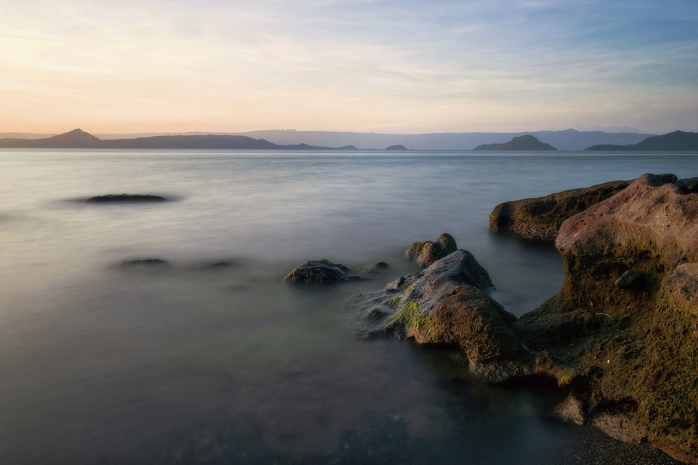
The heart of Calabarzon
13.75° N — 121.05° E
From breathtaking coastlines and volcanic landscapes to centuries-old heritage and unforgettable local flavors, discover a province filled with extraordinary experiences.
01 The province
Where the mountains meet the sea — and the horizon seems to stretch a little further.
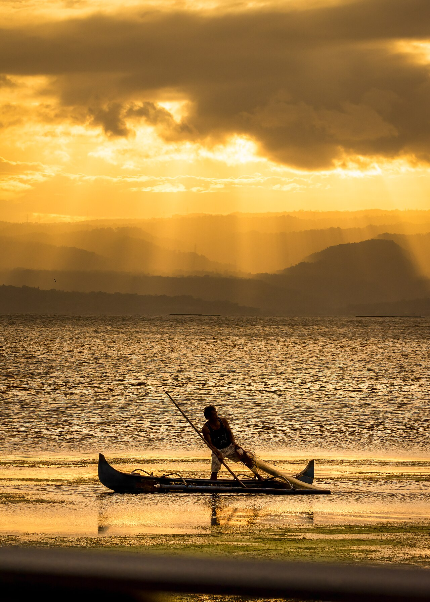
Batangas sits at the southern edge of Luzon, where volcanic hills fall toward the sea and everyday life moves to the rhythm of the water.
Just south of Manila, the province unfolds in layers: the mirror-calm waters of Taal Lake, the long curve of Laiya's coast, the coral-rich passage around Verde Island, and old towns where kapeng barako is still brewed strong and stories are told over a bowl of lomi.
Here, a morning can begin on a ridge above a volcano and end with your feet in the sand. Heritage churches, ancestral homes, and the rhythm of the Sublian keep the past present — while dive boats, surf, and trailheads point toward the next adventure.
Batangas is not a single place. It is a coastline, a crater lake, a mountain ridge, and a table set for you.
Four cities and thirty municipalities, each with its own coastline, harvest, or story.
02 Destinations
From a crater lake at dawn to a ridge above the clouds — eight places to begin. Filter by the landscape you are chasing.
Talisay · Taal Lake
A landscape within a landscape: an island volcano rising from the middle of Taal Lake. View it from the lakeshore towns and ridge roads, where every turn reframes the caldera.
San Juan · Tayabas Bay
San Juan's long stretch of sand and easy resort living. Come for calm mornings, warm water, and sunsets that turn the bay gold.
Tingloy · Maricaban Island
Masasa is the kind of beach you reach by boat and remember by the sound of the water. Snorkel, swim, and watch the day slow down.
Nasugbu · Batangas
Nasugbu's dramatic day-trip island: limestone cliffs, a ruined lighthouse, and water so clear it feels borrowed from another province.
Nasugbu · Batangas
Rolling green ridges, exposed trails, and a summit view that makes the early start worth it. A classic Batangas day hike.
Cuenca · Batangas
The Rockies are the reward: a rock face above Cuenca with Taal Lake spread out below. Steep, exposed, and unforgettable.
Nasugbu · Batangas
A quiet hilltop retreat in Nasugbu, known for the Chapel of Transfiguration, garden paths, and a view that invites you to sit still.
Batangas City · Verde Island Passage
At the heart of the Verde Island Passage, this island is a gateway to some of the planet's richest marine life — and a reminder to tread lightly.
03 Experiences
Four ways into Batangas. Follow the water, climb the ridge, walk the old streets, or pull up a chair.
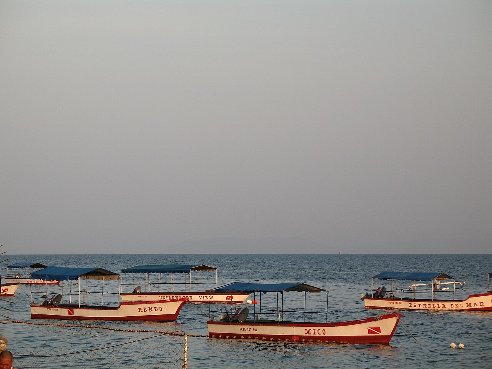
On the water
Follow the water. Island-hop between coves, snorkel over coral gardens, or simply claim a patch of sand and let the afternoon pass. The Verde Island Passage is one of the richest marine corridors in the world — go slowly, and look closer.
Find a coastline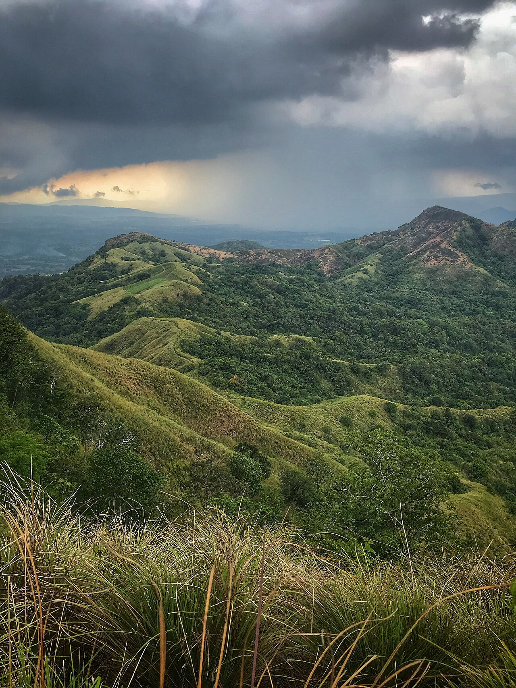
Above the clouds
Trade the shore for a ridge line. Batangas' trails reward early starts with cool air, rolling peaks, and views that open all the way to the lake. Come prepared, hike with a guide where required, and leave every trail as you found it.
Find a trail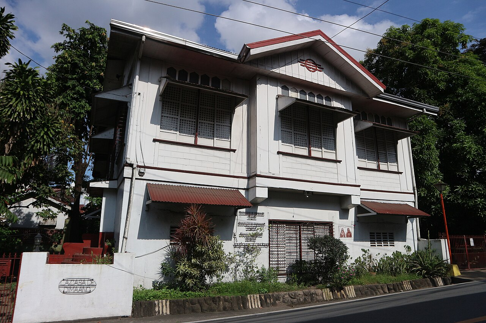
In the old streets
Walk through Taal's old streets, step into centuries-old churches, and meet the festivals that keep Batangueño identity alive. The province's history is not a exhibit — it is a living, working, everyday thing.
Read the stories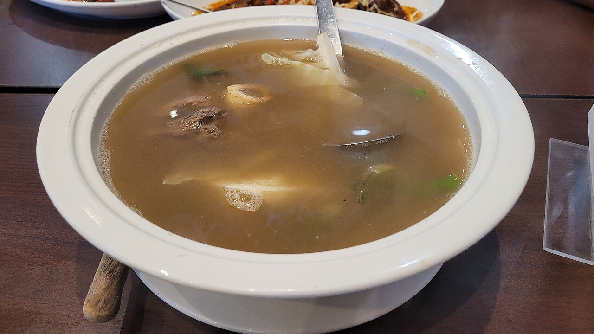
Around the table
From a steaming bowl of bulalo to a strong cup of barako, the province's table is generous, unhurried, and deeply local. Eat where the tricycles stop, ask what is fresh, and save room for panutsa.
Follow the flavor04 Culture & heritage
Batangas wears its history lightly. It is in the coral-stone walls of Taal, the incense inside the basilica, the measured steps of the Subli, and the way an old house still feels like a home.
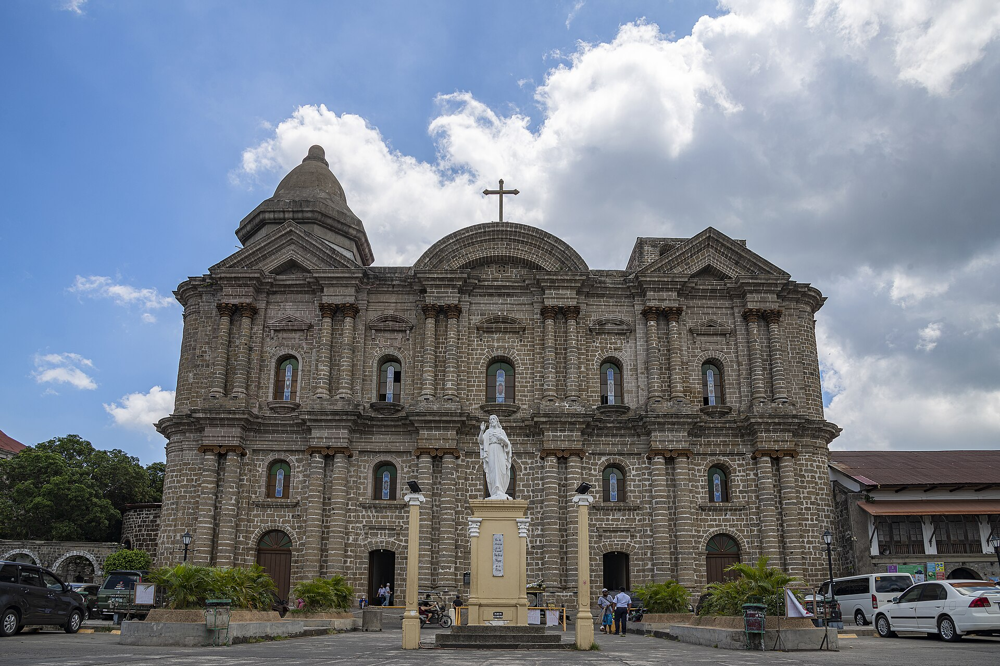
The Minor Basilica of St. Martin of Tours dominates Taal's skyline — a hilltop landmark of neo-classical lines, a wide nave, and centuries of devotion. Often counted among the largest churches in Asia, it remains the heart of the old town.
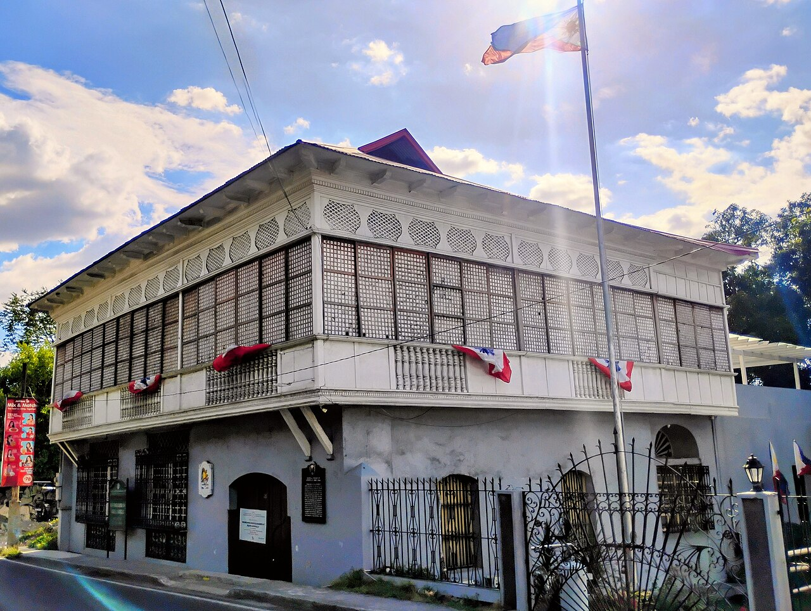
02 — The old town
Once a prosperous trading town, Taal preserves a grid of ancestral houses, capiz windows, and streets that feel like a stage set — except people still live here. Wander slowly, and look up.
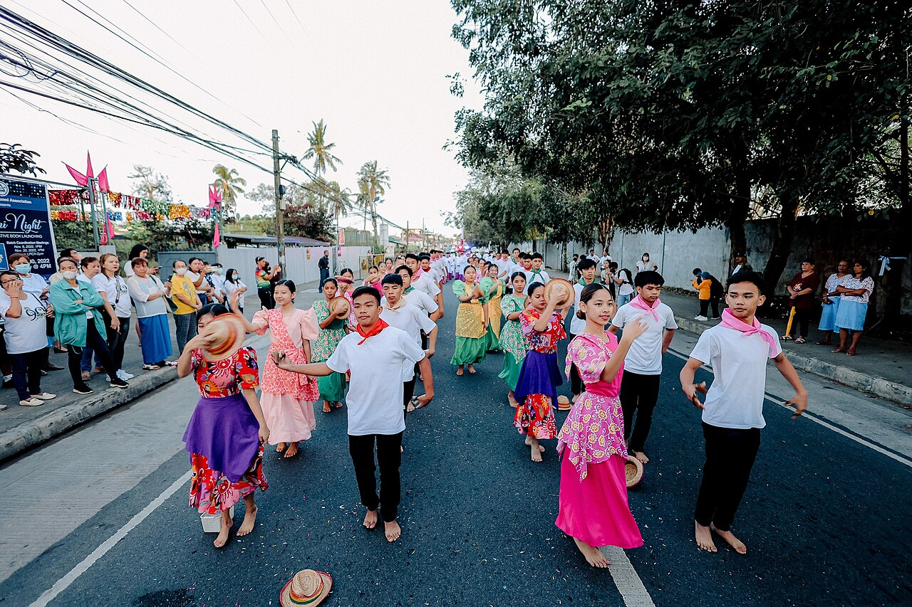
03 — Faith in motion
Each July, Batangas City celebrates the Sublian, a devotional dance offered to the Holy Cross. It is faith made visible: slow, solemn, and deeply Batangueño.
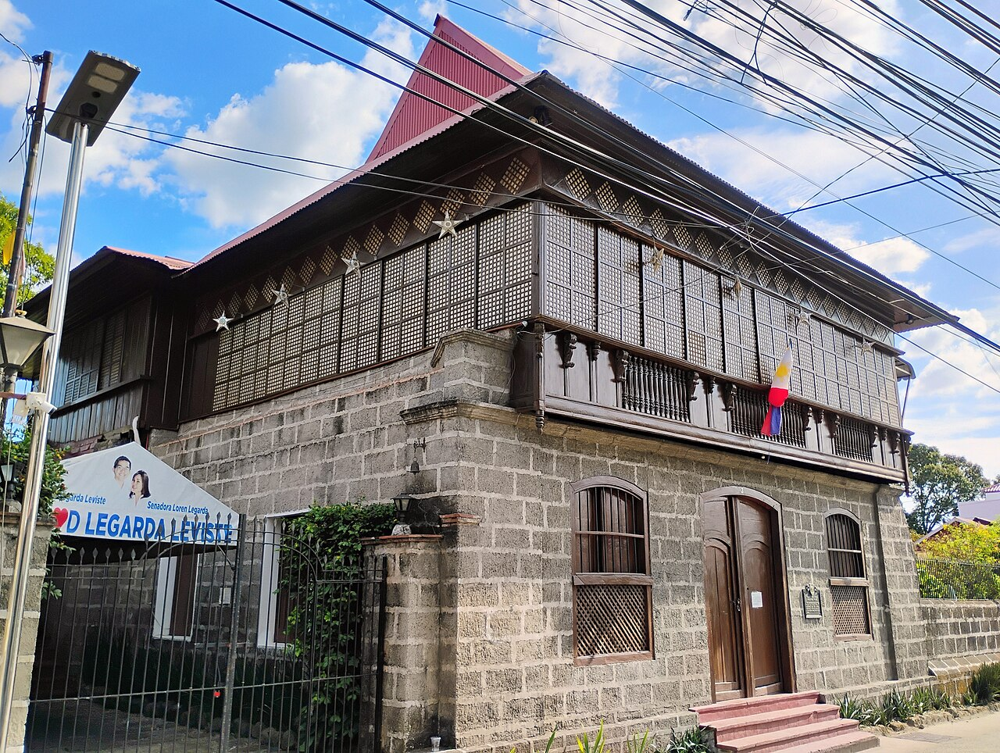
04 — Houses of memory
The Marcela Agoncillo, Ylagan-De La Rosa, and Gregorio Agoncillo houses open a window onto 19th-century Batangueño life — dark wood, wide floorboards, and stories of a nation taking shape.
“The past here is not behind glass. It is in the walls, the windows, and the way people still greet the morning.”
A Batangas story
05 Taste of Batangas
Batangueño cooking is bold, unhurried, and built for sharing. These are the dishes locals return to — and the reason visitors leave with a new favourite.

A clear, slow-simmered beef broth with tender shank and marrow. The kind of meal that ends conversations and starts second helpings.
A Sunday-table staple, best shared.
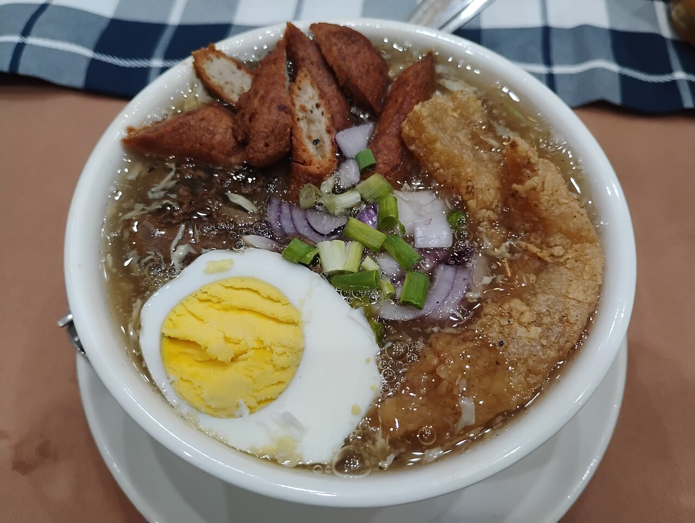
Thick egg noodles in a rich, glossy broth, laden with pork, liver, and crisp chicharon. In Batangas, it is a meal, a remedy, and a reason to linger.
Order it piping hot, with calamansi.
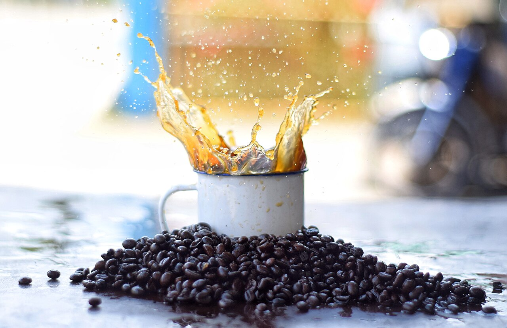
Strong, aromatic liberica coffee with a flavor that refuses to whisper. Lipa's coffee heritage is poured into every cup.
The province's most famous morning ritual.
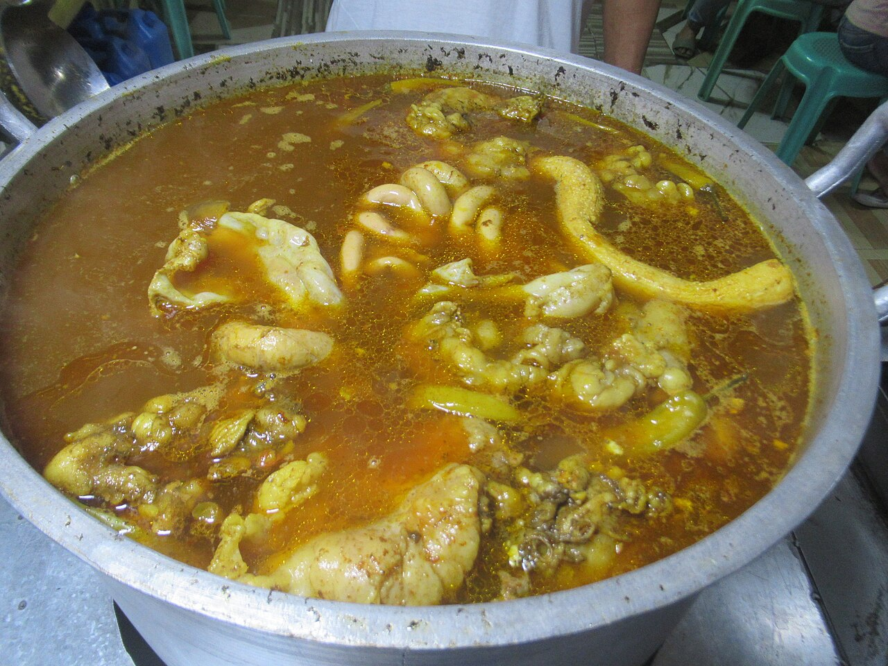
A gingery beef offal soup, deeply savory and served with rice. Not for the timid — always for the curious.
A local breakfast of champions.
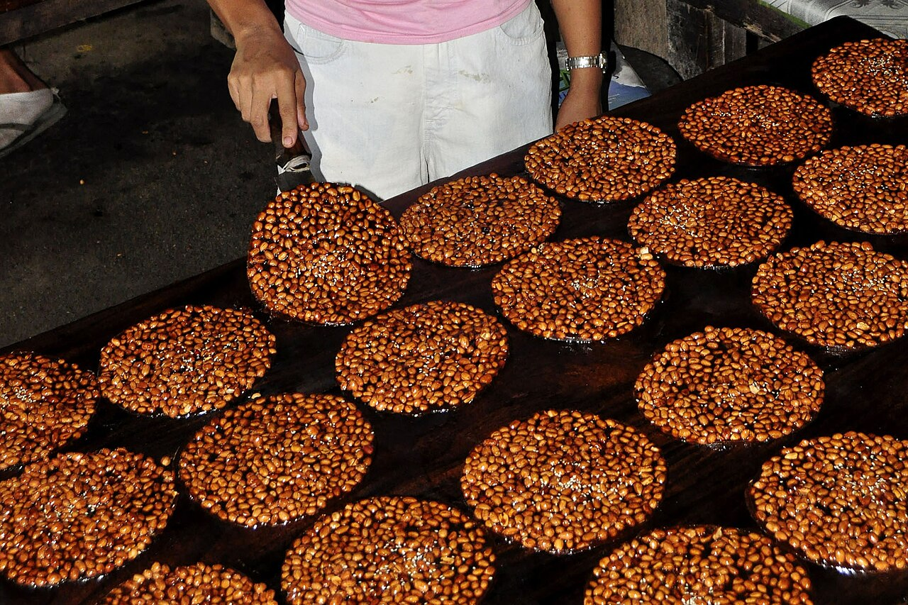
A flat, crisp peanut brittle made from caramelized brown sugar, long associated with Taal. Sweet, salty, and impossible to stop at one.
A pasalubong classic.
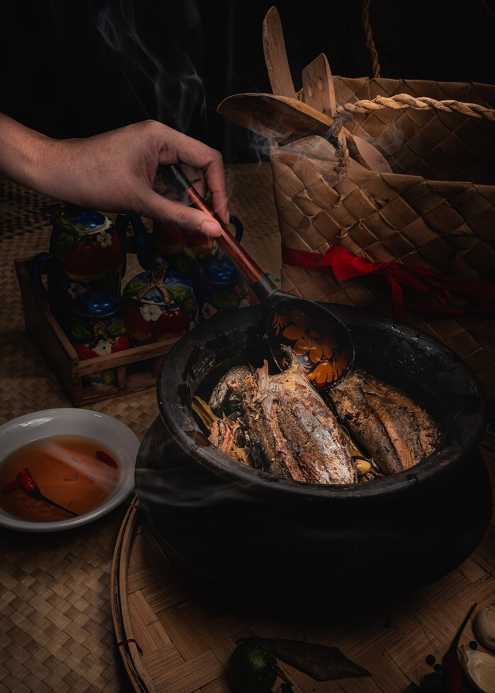
Bullet tuna layered in a clay pot with salt and a little vinegar, then cooked low and slow until the bones soften. Simple, patient, unforgettable.
The taste of a Batangas kitchen.
The best meals here are rarely the most polished. Follow the smoke, the queue, and the sound of a busy kitchen.
Interactive trip planner
Three choices. A route to begin with.
A starting point
Balanced pace · 3 suggested stops
Estimates and suggestions only. Check weather, boat schedules, and local advisories before you go.
December to May is generally the driest window. March to May suits beach days; November to February is kinder to hikes. Batangas can be visited year-round — always check weather and Taal Volcano advisories.
Buses run from Metro Manila to Batangas City, Lipa, and Nasugbu; routes and terminals change, so confirm locally. By car, take the South Luzon Expressway and continue via the STAR Tollway or through Tagaytay.
Jeepneys, tricycles, and vans connect the towns, while boats reach Tingloy, Verde Island, and Fortune Island. Sea crossings depend on weather and coast guard clearance; build in some flexibility.
Carry cash for small establishments, bring reef-safe sunscreen, register at trailheads, and respect closures. Taal Volcano Island is a Permanent Danger Zone — view it from safe vantage points.
↳ Budget styles
Indicative categories only. Rates vary by season, location, and operator — confirm current prices directly.
Homestays and inns, public transport, carinderia meals, early starts.
Mid-range resorts, a mix of shared and private transfers, sit-down dinners.
Boutique stays, private transfers, guided experiences, longer lunches.
07 Gallery
Coastlines, crater lakes, old streets, and the people who tie it all together. Select an image to see it larger.
Photography sourced from Wikimedia Commons.
The next chapter
Come for the view. Stay for the stories. Leave with a reason to return.